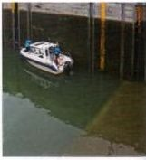
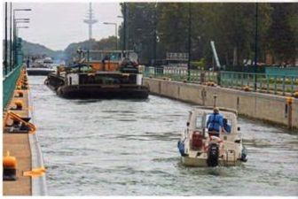
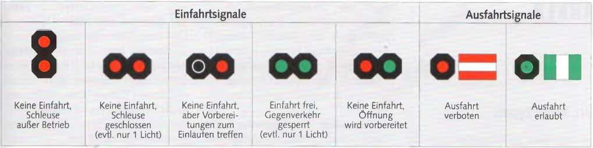
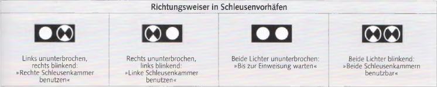

Wer Sprechfunk an Bord hat, schaltet den entsprechenden Kanal und meldet sich an. Kleinere Bootsschleusen haben häufig Selbstbedienung. In diesem Fall ist die Bedienungsanleitung genau zu befolgen. In den Niederlanden kann die Bedienung von unbesetzten Schleusen auch per Handy erfolgen. Wer gar nicht schleusen will, darf auch nicht im Schleusenbereich festmachen. Den häufig über Lautsprecher gegebenen Anweisungen des Schleusenpersonals ist unverzüglich nachzukommen.
Grundsätzlich gilt für das Manövrieren im Schleusenbereich:
► Absolutes Überholverbot.
► Um Wellenschlag zu vermeiden, so langsam fahren, dass das Boot gerade noch manövrierfähig ist.
► Ausreichenden Sicherheitsabstand halten. Als Yacht nur hinter der Berufsschifffahrt ein- und auslaufen.
► In der Schleusenkammer den Motor abstellen.
Vor dem Einlaufen genügend Fender ausbringen und die Festmacher vorn und achtern klarlegen. Nicht zu dicht hinter dem letzten Großschiff einlaufen, man gerät sonst in den Schraubenstrom, den man nicht ausmanövrieren kann.
In dem ziemlich schnell einströmenden Wasser kann das Boot heftig zu schwojen beginnen. Deshalb mit Vor- und Achterleine an der Schleusenwand festmachen oder die Vorleine zu dem vorausliegenden Schiff übergeben. Während des Schleusens müssen die Festmacher so bedient werden, dass Stöße gegen Schleusenwände, Schleusentore oder andere Fahrzeuge vermieden werden.
► Niemals an Bord mit Kopfschlag oder am Schleusenpoller mit Webeleinstek belegen, sondern immer auf Slip, damit man die Leinen jederzeit loswerfen oder versetzen kann und sich das Boot nicht darin aufhängt, wenn der Wasserspiegel fällt.
Beim Längsseitsliegen an einem großen Schiff hat man die Probleme mit den Leinen zwar nicht, es besteht aber immerhin die Gefahr, zwischen der Bordwand des Großen und der Schleusenmauer eingequetscht zu werden.
Beim Abschleusen am Oberhaupt aufpassen, dass das letzte Kleinfahrzeug beim Leeren der Schleuse nicht mit dem Heck auf den Schleusendrempel aufsetzt. Wie weit er in die Schleusenkammer hineinragt, zeigen weiße oder gelbe Farbmarkierungen an den Schleusenmauern an. In Spundwand-Schleusen auch auf die Fender achten. Sie können leicht in den Vertiefungen hängen bleiben.

Schleusenausfahrt in ruhigem Kielwasser.

Schleusen mit ausreichendem Abstand zum Drempel.
Beim Auslaufen die Leinen so lange belegt lassen, bis sich das Schraubenwasser des »Vorgängers« etwas beruhigt hat. Die Turbulenz kann so stark sein, dass man – selbst wenn man bereits unter Motor läuft – gegen die Schleusenwand zurückgeworfen wird.
Die Ein- und Ausfahrt in die Schleusenkammer wird bei Tag und Nacht durch Ampeln geregelt. Sie stehen auf einer oder auf beiden Seiten der Schleusenkammer. Gibt es mehrere Schleusenkammern, bezeichnen zwei weiße Blinklichter die zu benutzende Kammer. Vorrang haben im Zweifelsfall die Anweisungen des Schleusenpersonals.
Gibt es spezielle Sportboot-Schleusen, darf die große Schleuse nur auf Anweisung des Schleusenpersonals benutzt werden. Sportboote unter 20 m haben in allgemeinen Schleusen kein Anrecht auf Einzelschleusung. Sie können nur in einer Gruppe oder zusammen mit anderen Schiffen geschleust werden. Sie dürfen erst nach der Großschifffahrt in einem angemessenen Sicherheitsabstand in die Kammer einlaufen. Sofern an den Schleusenwänden Grenzen markiert sind, dürfen diese nicht überschritten werden.
In der Schleuse: Fender und Leinen rechtzeitig klarieren. Vor- und Achterschiff festmachen. Nebeneinander liegende Boote gut abfendern. Durch schnell ein- oder ausfließendes Wasser können recht heftige Verwirbelungen entstehen.

| Einfahrtsignale | Bedeutung |
|---|---|
| Keine Lichter / Schleuse außer Betrieb | Keine Einfahrt, Schleuse außer Betrieb. |
| Rot (evtl. nur 1 Licht) | Keine Einfahrt, Schleuse geschlossen. |
| Rot + Grün | Keine Einfahrt, aber Vorbereitungen zum Einlaufen treffen. |
| Grün (evtl. nur 1 Licht) | Einfahrt frei, Gegenverkehr gesperrt. |
| Rot blinkend | Keine Einfahrt, Öffnung wird vorbereitet. |
| Ausfahrtsignale | Bedeutung |
|---|---|
| Rot | Ausfahrt verboten. |
| Grün | Ausfahrt erlaubt. |

Richtungsweiser in Schleusenvorhäfen
► Links ununterbrochen, rechts blinkend: »Rechte Schleusenkammer benutzen«.
► Rechts ununterbrochen, links blinkend: »Linke Schleusenkammer benutzen«.
► Beide Lichter ununterbrochen: »Bis zur Einweisung warten«.
► Beide Lichter blinkend: »Beide Schleusenkammern benutzbar«.

Ein blau-weißes Schild (»UKW 18«) zeigt jeweils den UKW-Kanal an, auf dem die Schleusenaufsicht über Sprechfunk zu erreichen ist und die Anmeldung zu erfolgen hat.
Der Deutsche Motoryachtverband zahlt für die Motorbootfahrer jedes Jahr zur Abgeltung der Schleusengebühren eine Pauschale an das Bundesfinanzministerium. Sie gilt aber nur für die Bundeswasserstraßen. Auf Landesgewässern müssen Schleusengebühren selbst entrichtet werden.